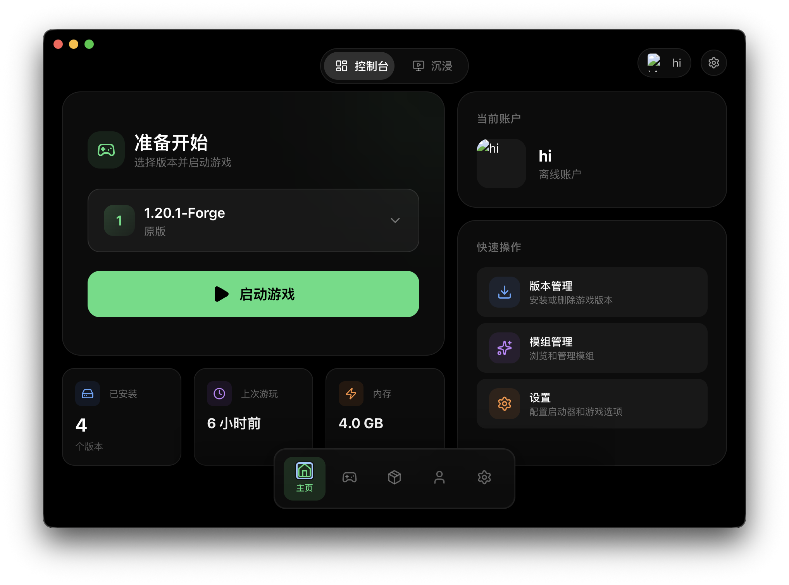
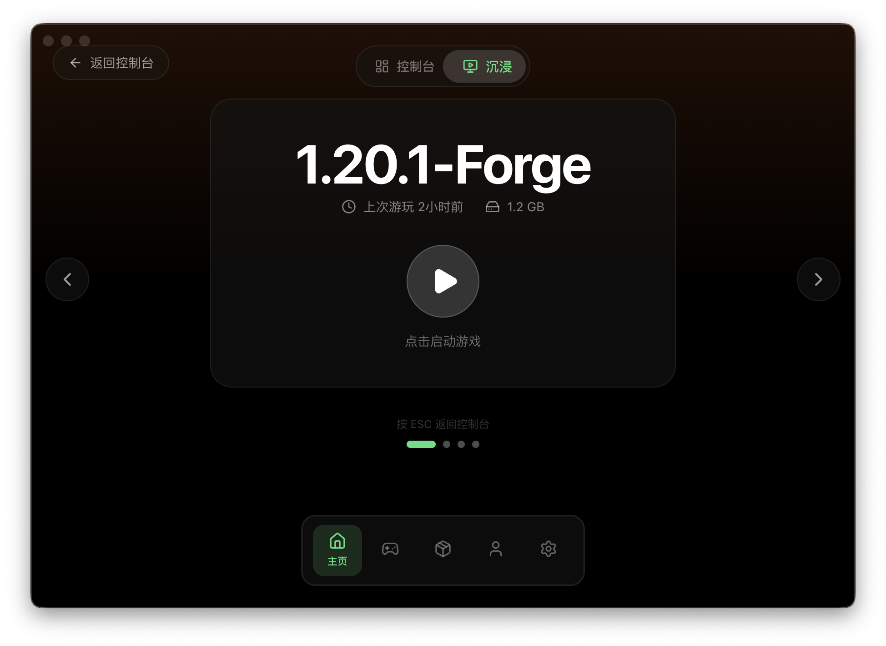
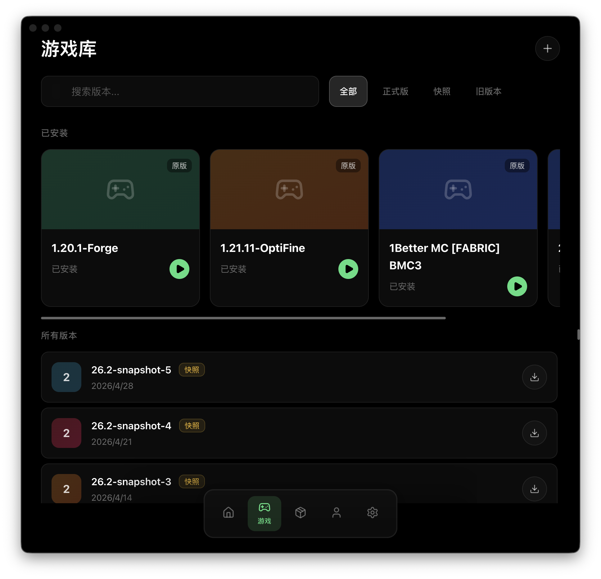
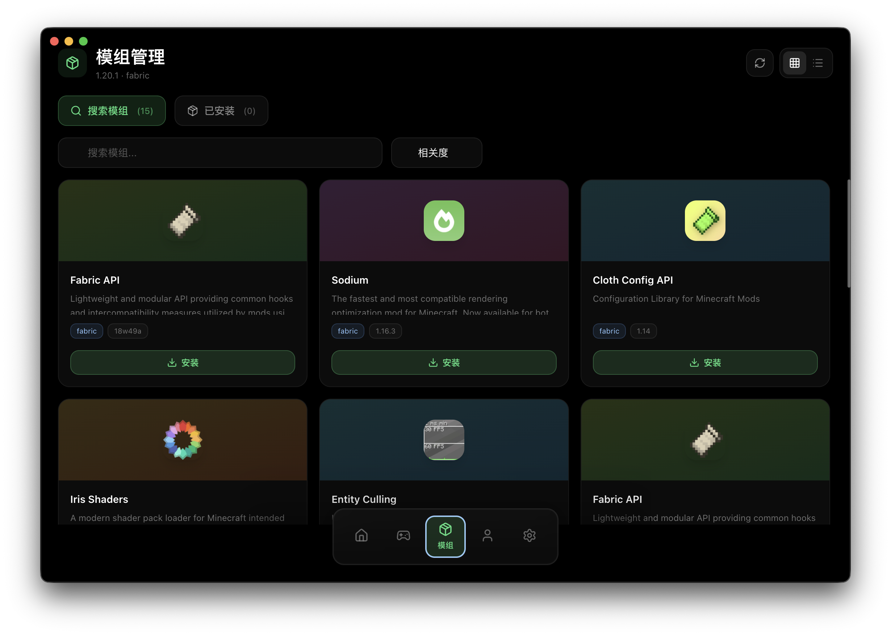

清晰的信息面板，一目了然的游戏状态。版本选择、账户管理、快速操作——所有功能触手可及。


已安装的版本以精美卡片呈现，每个版本拥有独特的色彩标识。从正式版到快照，从 Forge 到 Fabric。

Sodium、Iris、Fabric API……一键浏览、安装、管理你的模组

基于源码静态分析的完整技术债务与安全问题梳理，共 26 项发现
实时追踪 Bonjour 的每一次迭代与成长
下载 Bonjour，几分钟内启动你的 Minecraft 世界